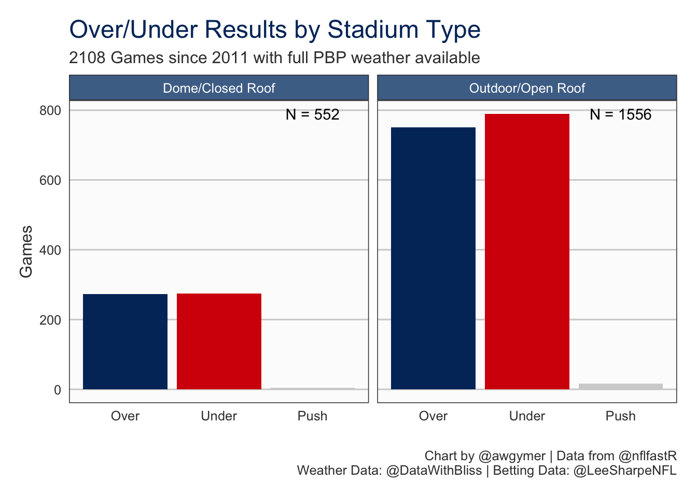
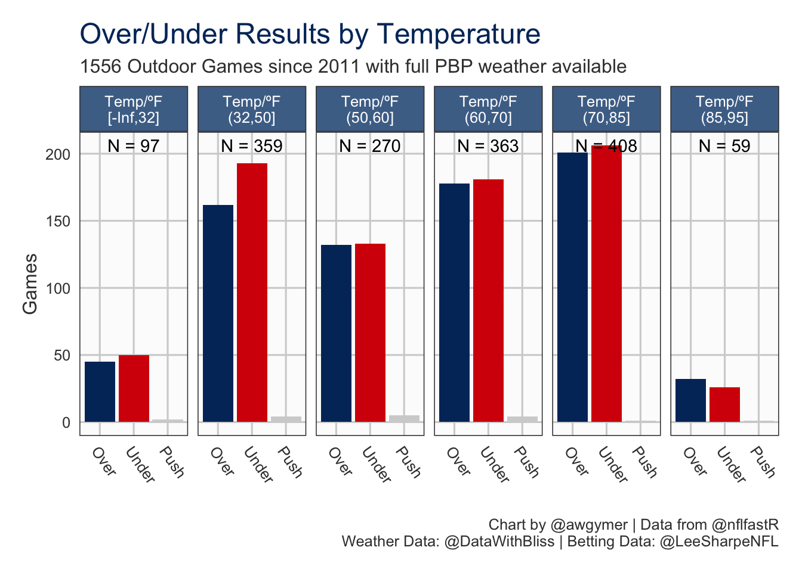
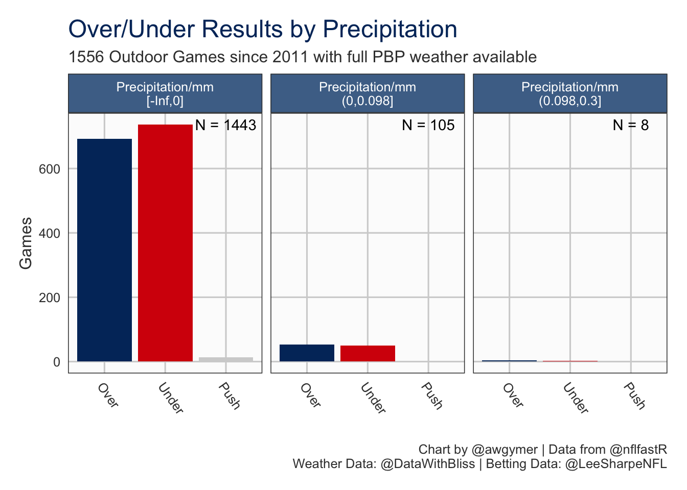
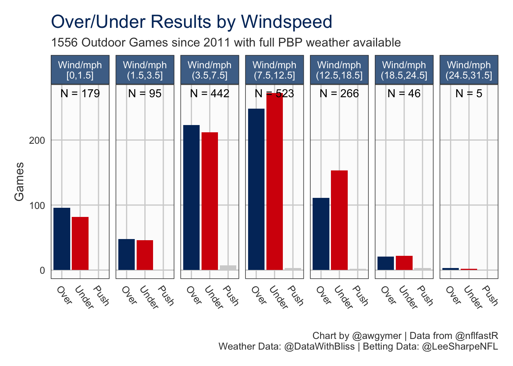
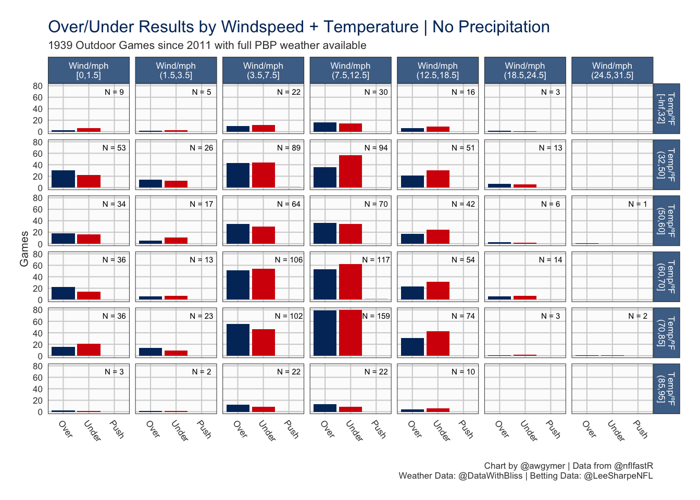
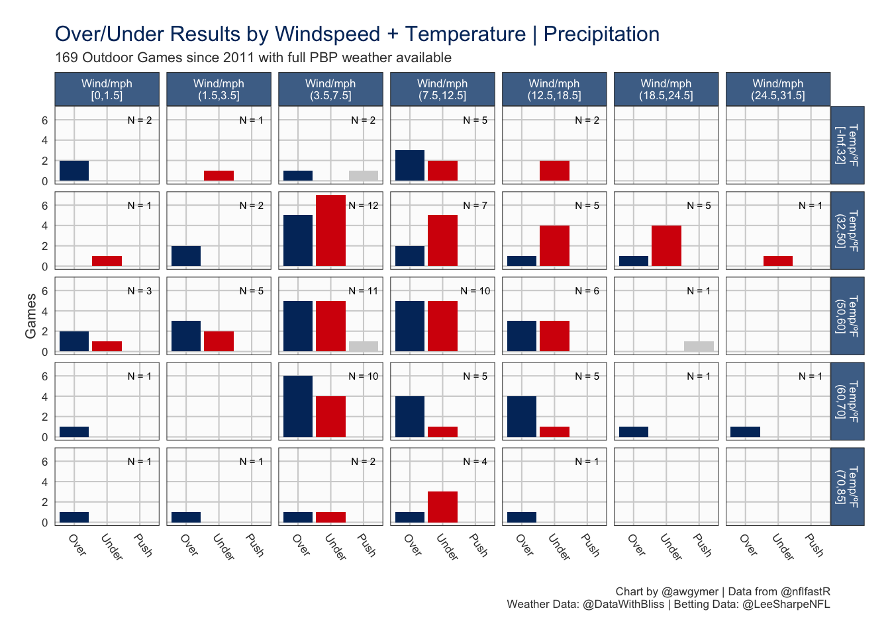

Last updated: 2020-07-17 19:23:49
I have previously merged weather data from (@DataWithBliss) and Michael Lopez (@StatsbyLopez) with nflfastR play-by-play data and you can read more about that here. I took much of the code from that work and turned it into a series of functions to allow me to easily get merged weather and play-by-play data. Once again I am only working with data from 2011 onwards because this is the earliest that real timestamps are availble for play-by-play data. Betting data came from Lee Sharpe’s (@LeeSharpeNFL) games.csv.
pbp <- get_pbp_from_db(2011)
add_playtimes(pbp)
add_realtime_dt(pbp)
weatherdat <- clean_weatherdata()
pbp <- combine_weatherdat(pbp, weatherdat)
# Exclude any games where there is missing precipitation data
pbp <- pbp[pbp[,.(missing=any(is.na(Precipitation))), by=new_game_id][missing==F], on='new_game_id']
# Fetch Lee's games.csv
gms <- fread('http://www.habitatring.com/games.csv')I then decided to bin the weather data. I used cutoffs for windspeed which reflect the beaufort scale. For precipitation I used the same bins used by Tom in his weather data set, which appear to be official ranges according to Wikipedia. For temperature I chose totally arbitrary bandings - I think temperature is much more relative than precipitation and windspeed; what’s “hot” in Minnesota probably isn’t registering so much in Arizona.
beaufort_bins <- c(0, 1.5, 3.5, 7.5, 12.5, 18.5, 24.5, 31.5, 38.5, 46.5)
beaufort_labs <- c(
'Calm', 'Light Air', 'Light Breeze', 'Gentle Breeze', 'Moderate Breeze',
'Fresh Breeze', 'Strong Breeze', 'Near Gale', 'Gale'
)
precip_bins <- c(-Inf, 0, 0.098, 0.3, 2)
precip_labs <- c('None', 'Light', 'Moderate', 'Heavy')
temp_bins <- c(-Inf, 32, 50, 60, 70, 85, 95, Inf)
temp_labs <- c('Freezing', 'Cold', 'Cool', 'Mild', 'Warm', 'Very Warm', 'Hot')
# Bin the windspeeds and temps and also simplify the precipitation bins
pbp[, beaufort_scale_labs:=cut(WindSpeed, beaufort_bins, labels=beaufort_labs, include.lowest=T, ordered_result=T)]
pbp[, beaufort:=cut(WindSpeed, beaufort_bins, include.lowest=T, ordered_result=T)]
pbp[, precip_scale_labs:=cut(Precipitation, precip_bins, labels=precip_labs, include.lowest = T, ordered_result = T)]
pbp[, precip_scale:=cut(Precipitation, precip_bins, include.lowest = T, ordered_result = T)]
pbp[, temp_scale_labs:=cut(Temperature, temp_bins, labels=temp_labs, include.lowest=T, ordered_result=T)]
pbp[, temp_scale:=cut(Temperature, temp_bins, include.lowest=T, ordered_result=T)]I then used the modal weather conditions from the play-by-play to determine a single banding for each measure per game. This is fairly crude and considering I use this method I could perhaps have considered including games that had missing weather data for less than half of plays.
weather_gms <- pbp[,
.(wind_labs=getmode(beaufort_scale_labs),
wind=getmode(beaufort),
temp_labs=getmode(temp_scale_labs),
temp=getmode(temp_scale),
rain_labs=getmode(precip_scale_labs),
rain=getmode(precip_scale),
outdoors=roof[1] %in% c('outdoors', 'open')
),
by=new_game_id]
weather_gms[,outdoors_labs := ifelse(outdoors==T, 'Outdoor/Open Roof', 'Dome/Closed Roof')]Next I merged in the betting data from Lee Sharpe’s games.csv. I also calculated the profit if you bet the over/under with 1 unit.
gms[,c('wind', 'temp'):=NULL]
weather_gms <- gms[weather_gms, on=.(game_id=new_game_id)]
weather_gms[, total_diff := total-total_line]
weather_gms[, total_result := ifelse(total_diff<0, 'under', ifelse(total_diff>0, 'over', 'push'))]
weather_gms[, total_result := factor(total_result, levels=c('over', 'under', 'push'))]
bet_returns <- function(odds, stake, win){
if(!win){
return(-stake)
}
if(odds > 0){
returns <- (odds * (stake/100))
}
else if(odds < 0){
returns <- ((100/odds) * stake * -1)
}
else {returns <- NA}
return(returns)
}
weather_gms[, under_profits := mapply(bet_returns, under_odds, 1, (total_result=='under'))]
weather_gms[total_result == 'push', under_profits := 0]
weather_gms[!is.na(over_odds), over_profits := mapply(bet_returns, over_odds, 1, (total_result=='over'))]
weather_gms[total_result == 'push', over_profits := 0]My aim was to look at if knowing the weather could give you an advantage when betting the under/over. First let’s look at a sort of “control”. Is there any difference between games played indoors and those played outdoors.

So whilst the indoor games appear to be an almost perfect 50/50 split of under/over there does appear to be a very small bias towards hitting the under in outdoor games. Can we explain this by the weather?

Ok, so it looks like there might be a bit of an advantage on the unders when it’s cold or freezing.

It turns out there really aren’t that many games that are played in prolonged rainfall and even with the small sample size there is no indication that knowing it’s going to be wet can help you pick the under/over.

It does look like the windier it gets the more likely the under becomes to hit, but like temperature it’s not exactly a resounding difference.
So it looks like there might be some conditions in which the under hits more often than not. Could we combine the conditions to find another subset which is even more skewed? If we try plotting faceted by all three variables at once you find that it becomes too small and impossible to actually discern anything on the plot (trust me I tried) so instead I do 1 plot for games with precipitation and 1 for games without precipitation, faceted by windspeed and temperature. There is no point in breaking down the levels of precipitation further as there are just 9 games with “moderate” and 2 games with “heavy” precipitation in this dataset.

There are some signs that cold and moderately windy conditions could be favourable for the unders, but it’s not a strong trend by any means.

When rain is added to the mix it looks like wind and cold combine to really boost the unders but closer inspection shows that the sample sizes are pretty small - maybe 30 games in total - which makes it hard to draw a real conclusion.
So can knowing the weather conditions help you bet the over/under more successfully? If you can predict cold, wet, and windy conditions then perhaps, but I wouldn’t be rushing out to stake my savings on it. The other aspect of this which isn’t captured here is the forecast; it’s possible that the increase in the times the under hit is down to it being hard to accurately forecast a combination of conditions and so the line is harder to set - of course that also means it’s harder to bet!
There is more that could be looked at with regards to weather and the total line such as whether both teams are “outdoor” teams, maybe dome teams competing in such conditions increases the chance of hitting the under, but I leave that for another day.